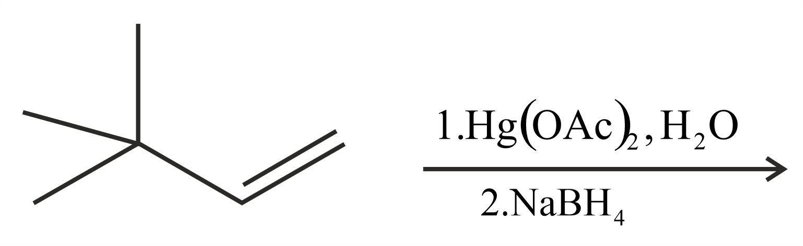

🧪 p-Block Elements
56
Total Questions
5
Years
3
Clusters
Question Clusters
CHEM-PBLOELEM-P_BLOCK_NITROGEN_OXYGEN
p-Block Elements: Group 15 & 16: Nitrogen & Oxygen Family
CHEM-PBLOELEM-P_BLOCK_HALOGENS_NOBLE_GASES
p-Block Elements: Group 17 & 18: Halogens & Noble Gases
CHEM-PBLOELEM-P_BLOCK_BORON_CARBON
p-Block Elements: Group 13 & 14: Boron & Carbon Family
Year-wise Frequency
| Year | Questions | Frequency |
|---|---|---|
| 2021 | 17 | |
| 2022 | 8 | |
| 2023 | 16 | |
| 2024 | 12 | |
| 2025 | 3 |
Questions
Showing first 50 of 56 questions.
Q33 (2021 Shift 1)
A group 15 element, which is a metal and forms a hydride with strongest reducing power among group 15 hydrides. The element is :
CHEM-2021-0101-S1-Q033
Q42 (2021 Shift 1)
Match List-I with List-II : List-I List-II Industrial process Application
CHEM-2021-0101-S1-Q042
Q42 (2021 Shift 1)
Chemical nature of the nitrogen oxide compound obtained from a reaction of concentrated nitric acid and P4O10 (in 4 : 1 ratio) is:
CHEM-2021-0101-S1-Q042
Q36 (2021 Shift 2)
The single largest industrial application of dihydrogen is:
CHEM-2021-0101-S2-Q036
Q39 (2021 Shift 2)
In Carius method, halogen containing organic compound is heated with fuming nitric acid in the presence of:
CHEM-2021-0101-S2-Q039
Q34 (2021 Shift 1)
Given below are the statements about diborane
CHEM-2021-0101-S1-Q034
Q34 (2021 Shift 2)
Which of the following compound is added to the sodium extract before addition of silver nitrate for testing of halogens?
CHEM-2021-0101-S2-Q034
Q42 (2021 Shift 2)
The correct order of bond dissociation enthalpy of halogens is:
CHEM-2021-0101-S2-Q042
Q56 (2021 Shift 2)
0. 8 g of an organic compound was analysed by Kjeldahl's method for the estimation of nitrogen. If the percentage of nitrogen in the compound was found to be 42% , then....... mL of 1M H2 SO4 would have been neutralized by the ammonia evolved during the analysis.
Answer:
12CHEM-2021-0101-S2-Q056
Q59 (2021 Shift 1)
In Carius method for estimation of halogens, 0. 2 g of an organic compound gave 0. 188 g of AgBr. The percentage of bromine in the compound is __________. (Nearest integer) [Atomic mass: Ag = 108, Br = 80 ]
Answer:
40CHEM-2021-0101-S1-Q059
Q36 (2021 Shift 2)
In stratosphere most of the ozone formation is assisted by :
CHEM-2021-0101-S2-Q036
Q56 (2021 Shift 2)
When 5. 1 g of solid NH4 HS is introduced into a two litre evacuated flask at 27°C, 20% of the solid decomposes into gaseous ammonia and hydrogen sulphide. The Kp for the reaction at 27°C is x × 10−2 . The value of x is (Integer answer) [Given 1R = 0. 082 L atm K−1 mol−1]
Answer:
6CHEM-2021-0101-S2-Q056
Q35 (2021 Shift 2)
Which one of the following set of elements can be detected using sodium fusion extract?
CHEM-2021-0101-S2-Q035
Q42 (2021 Shift 2)
The addition of silica during the extraction of copper from its sulphide ore :-
CHEM-2021-0101-S2-Q042
Q59 (2021 Shift 1)
The number of halogen/(s) forming halic (V) acid is __________ .
Answer:
3CHEM-2021-0101-S1-Q059
Q41 (2021 Shift 2)
The number of bonds present in sulphurous acid, peroxodisulphuric acid and pyrosulphuric acid, S = O respectively are :
CHEM-2021-0101-S2-Q041
Q42 (2021 Shift 2)
Which one of the following correctly represents the order of stability of oxides, X2O; ( X = halogen ) ?
CHEM-2021-0101-S2-Q042
Q35 (2022 Shift 1)
Phenol on reaction with dilute nitric acid, gives two products. Which method will be most efficient for large scale separation?
CHEM-2022-0101-S1-Q035
Q44 (2022 Shift 1)
White precipitate of AgCl dissolves in aqueous ammonia solution due to formation of
CHEM-2022-0101-S1-Q044
Q41 (2022 Shift 1)
The correct order of melting points of hydrides of group 16 elements is
CHEM-2022-0101-S1-Q041
Q39 (2022 Shift 2)
Halogenation of which one of the following will yield m-substituted product with respect to methyl group as a major product?

CHEM-2022-0101-S2-Q039
Q41 (2022 Shift 2)
Given below are two statements: one is labelled as Assertion and the other is labelled as Reason. Assertion: Flourine forms one oxoacid. Reason: Flourine has smallest size amongst all halogens and is highly electronegative. In the light of the above statements, choose the most appropriate answer from the Question: options given below.
CHEM-2022-0101-S2-Q041
Q53 (2022 Shift 1)
Kjeldahl's method was used for the estimation of nitrogen in an organic compound. The ammonia evolved from 0. 55 g of the compound neutralised 12. 5 mL of 1M H2 SO4 solution. The percentage of nitrogen in the compound is (Nearest integer)

Answer:
64CHEM-2022-0101-S1-Q053
Q56 (2022 Shift 1)
A dilute solution of sulphuric acid is electrolysed using a current of for hours to produce hydrogen 0. 10 A 2 and oxygen gas. The total volume of gases produced at STP is cm3 . (Nearest integer) [Given : Faraday constant F = 96500 Cmol−1 at STP , molar volume of an ideal gas is 22. 7 L mol−1 ]
Answer:
127CHEM-2022-0101-S1-Q056
Q38 (2022 Shift 2)
Aqueous solution of which of the following boron compounds will be strongly basic in nature?
CHEM-2022-0101-S2-Q038
Q40 (2023 Shift 1)
Given below are two statements: Statement I: Chlorine can easily combine with oxygen to from oxides: and the product has a tendency to explode. Statement II: Chemical reactivity of an element can be determined by its reaction with oxygen and halogens. In the light of the above statements, choose the correct answer from the options given below
CHEM-2023-0101-S1-Q040
Q36 (2023 Shift 1)
Match List-I with List-II. List-I List-II Element detected Reagent used/Product formed A Nitrogen I Na2FeCN5NO B Sulphur II AgNO3 C Phosphorus III Fe4FeCN63 D Halogen IV NH42MoO4 Choose the correct answer from the options given below:
CHEM-2023-0101-S1-Q036
Q52 (2023 Shift 1)
Which halogen is known to cause the reaction given below? (1) All halogens (2) Only Bromine (3) Only Iodine (4) Only Chlorine
Answer:
1CHEM-2023-0101-S1-Q052
Q46 (2023 Shift 2)
Which of these reactions is not a part of breakdown of ozone in stratosphere?
CHEM-2023-0101-S2-Q046
Q35 (2023 Shift 1)
Given below are two statements: Statement I: SbCl5 is more covalent than SbCl3 Statement II: The higher oxides of halogens also tend to be more stable than the lower ones. In the light of the above statements, choose the most appropriate answer from the options given below.
CHEM-2023-0101-S1-Q035
Q48 (2023 Shift 1)
For lead storage battery pick the correct statements A. During charging of battery, PbSO4 on anode is converted into PbO2 B. During charging of battery, PbSO4 on cathode is converted into PbO2 C. Lead storage battery consists of grid of lead packed with PbO2 as anode D. Lead storage battery has ~38% solution of sulphuric acid as an electrolyte Choose the correct answer from the options given below:
CHEM-2023-0101-S1-Q048
Q45 (2023 Shift 1)
The radical which mainly causes ozone depletion in the presence of UV radiations is :
CHEM-2023-0101-S1-Q045
Q55 (2023 Shift 2)
If the formula of Borax is Na2 B4O𝑥( OH 𝑦· zH2O, then x + y + z = ______ )
Answer:
17CHEM-2023-0101-S2-Q055
Q33 (2023 Shift 2)
Sum of π -bonds present in peroxodisulphuric acid and pyrosulphuric acid is
CHEM-2023-0101-S2-Q033
Q41 (2023 Shift 1)
During the borax bead test with CuSO4 , a blue green colour of the bead was observed in oxidising flame due to the formation of
CHEM-2023-0101-S1-Q041
Q42 (2023 Shift 1)
Compound that will give positive Lassaigne's test for both nitrogen and halogen is
CHEM-2023-0101-S1-Q042
Q33 (2023 Shift 2)
Bond dissociation energy of E −H bond of the " H2E " hydrides of group 16 elements (given below), follows order.
CHEM-2023-0101-S2-Q033
Q39 (2023 Shift 2)
Boric acid in solid, whereas BF3 is gas at room temperature because of
CHEM-2023-0101-S2-Q039
Q42 (2023 Shift 2)
The Lewis acid character of boron tri halides follows the order:
CHEM-2023-0101-S2-Q042
Q54 (2023 Shift 2)
In the following halogenated organic compounds the one with maximum number of chlorine atoms in its structure is: (1) Chloral (2) Gammaxene (3) Chloropicrin (4) Freon- 12

Answer:
10CHEM-2023-0101-S2-Q054
Q59 (2023 Shift 2)
Given below are two statements : Statement I : Upon heating a borax bead dipped in cupric sulphate in a luminous flame, the colour of the bead becomes green. Statement II : The green colour observed is due to the formation of copper(I) metaborate In the light of the above statements, choose the most appropriate answer from the options given below: (1) Both Statement I and Statement II are false (2) Both Statement I and Statement II are true (3) Statement I is false but Statement II is true (4) Statement I is true but Statement II is false
Answer:
480CHEM-2023-0101-S2-Q059
Q41 (2024 Shift 2)
Lassaigne's test is used for detection of:
CHEM-2024-0101-S2-Q041
Q53 (2024 Shift 2)
Following Kjeldahl's method, 1 g of organic compound released ammonia, that neutralised 10 mL of 2MH2SO4 . The percentage of nitrogen in the compound is _______ % .
Answer:
56CHEM-2024-0101-S2-Q053
Q33 (2024 Shift 1)
Given below are two statements : Statement I : In group 13, the stability of +1 oxidation state increases down the group. Statement II : The atomic size of gallium is greater than that of aluminium. In the light of the above statements, choose the most appropriate answer from the options given below :
CHEM-2024-0101-S1-Q033
Q37 (2024 Shift 1)
Among the following halogens F2, Cl2, Br2 and I2 Which can undergo disproportionation reactions?
CHEM-2024-0101-S1-Q037
Q42 (2024 Shift 1)
On reaction of Lead Sulphide with dilute nitric acid which of the following is not formed?
CHEM-2024-0101-S1-Q042
Q58 (2024 Shift 2)
Number of oxygen atoms present in chemical formula of fuming sulphuric acid is ______.

Answer:
7CHEM-2024-0101-S2-Q058
Q36 (2024 Shift 1)
Given below are two statements : one is labelled as Assertion
CHEM-2024-0101-S1-Q036
Q36 (2024 Shift 1)
Given below are two statements : Statement I : The electronegativity of group 14 elements from Si to Pb gradually decreases. Statement II : Group 14 contains non-metallic, metallic, as well as metalloid elements. In the light of the above statements, choose the most appropriate from the options given below :
CHEM-2024-0101-S1-Q036
Q49 (2024 Shift 1)
The Lassiagne's extract is boiled with dil HNO3 before testing for halogens because,
CHEM-2024-0101-S1-Q049